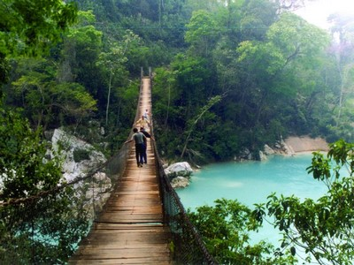
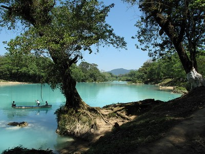
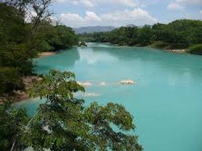
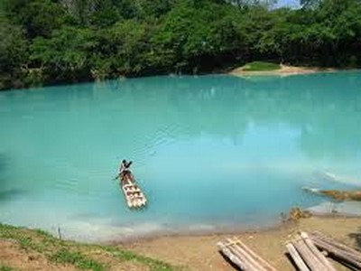
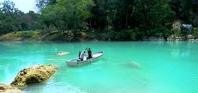

Lugar ideal para realizar actividades ecoturísticas.
Podrá pasear en kayak en el río Shumulhá.
Le cautivara tan bello lugar, ademas de que cuenta con una gran variedad de flora y fauna, ideal para cualquier actividad al exterior.
Ubicada a 100 km de la Ciudad de Yajalón, rumbo a Cascadas de Agua Azul.
Partiendo Yajalon se toma la carretera a Ocosingo, llegando a Temo se debe tomar la carretera a Palenque (federal 199).
Podrá encontrarlo después de Agua Azul, aproximadamente a 15 minutos
En el lugar usted puede practicar actividades de esparcimientos como:
---Nadar---
---Cabalgatas---
---Caminatas---
---Fotografía---
---Paseos a caballo---
---Bicicleta de montaña---
---Kayak---
---Senderismo---
---Ecoturismo---





Posicione el mouse sobre las imágenes